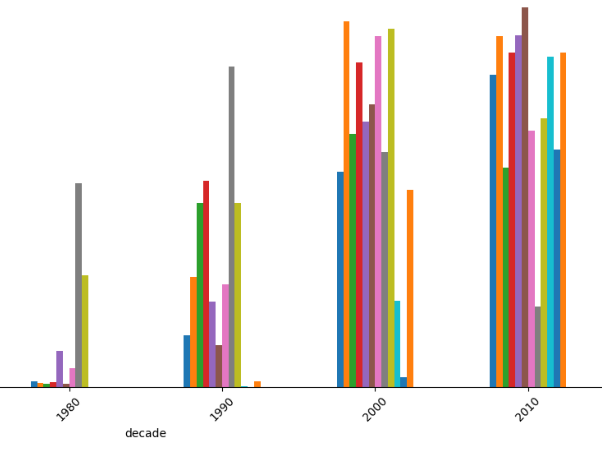
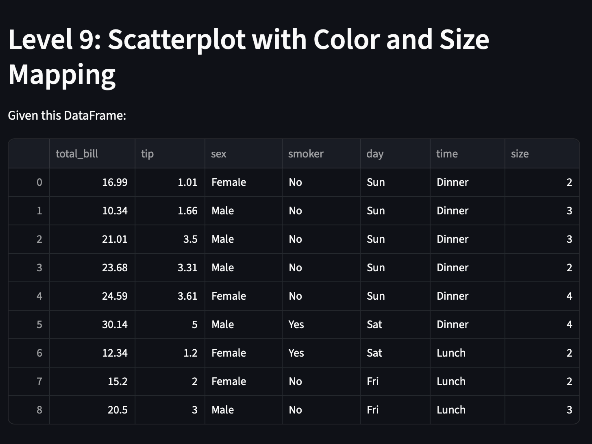
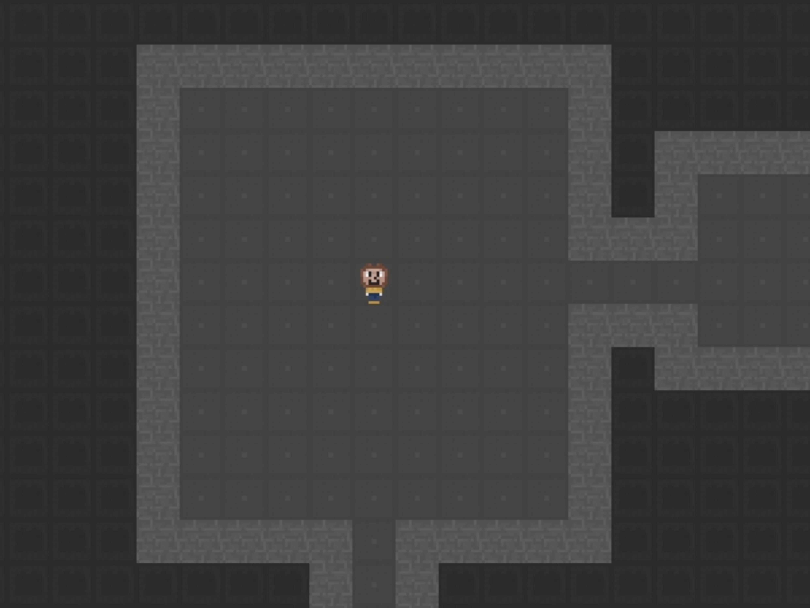

Olivia Derby
Data Science + History @ UC Berkeley
Building ML-driven products at early-stage startups. Right now that means co-founding a computer vision startup for remote physical therapy and building AI tools of my own on the side.
Experience
Technical Product Marketing Intern
Aug 2026 - PresentArango AI • San Francisco, CA
- Grew the company's Reddit presence from a standing start, building credibility in threads where the product's problem space was already being discussed
- Built an internal tool to track mentions of Arango across Reddit threads, surfacing relevant conversations as they happen
- Test the product directly to ground developer-facing content in real usage rather than feature lists
Student Assistant
May 2026 - PresentUniversity of California, Berkeley • Berkeley, CA
- Supporting daily front desk operations including directing guests and conference attendees, managing incoming calls, and assisting with lockouts
- Coordinating with internal teams on room stocking and maintenance
Founding Intern
May 2026 - PresentRadical • Berkeley, CA
- Pitch and develop content ideas, script social media videos, and storyboard campaign assets to support brand growth
- Lead outreach efforts and contribute to a 60-day video challenge initiative aimed at driving sign-ups across the Bay Area
Data Science Transfer Council
Mar 2026 - PresentUC Berkeley College of Computing, Data Science, and Society • Berkeley, CA
- Advising on the structure and content of new student programming for incoming transfer students
Co-Founder & CPO
Jan 2026 - PresentKinetik • Berkeley, CA
- Co-founded a startup using computer vision to track patient movement and progress in remote physical therapy, and took 2nd place pitching to VCs out of a Berkeley SCET class
- Ran 50+ interviews with patients, clinicians, and lawyers, including on-site at the Stone Clinic, and researched insurance and reimbursement structures to test whether the product could be billed for
- Built real-time rep counting with MediaPipe Pose Landmarker that runs entirely client-side, holding marginal server cost at zero
- Shipped an end-to-end tracking pipeline (Prisma/PostgreSQL, Fastify REST API, React) feeding a clinician dashboard with automated high-pain alerting, deployed live on Render and Neon
Peer Advocate Lead
Jul 2025 - PresentUC Berkeley Transfer Student Center • Berkeley, CA
- Manage digital content strategy and communications for 7,000+ transfer students across social media, newsletters, and web channels
- Analyzed engagement metrics and web traffic to refine content strategy, helping raise over $12,000 during a single campaign
- Launched an animated trivia campaign that doubled student engagement through data-informed content personalization
Go-To-Market
Jan 2026 - May 2026Osmo • San Francisco, CA
- Contributed to go-to-market strategy for an AI motion graphics platform, analyzing user needs and proposing data-driven marketing campaigns and feature enhancements
- Supported client-facing ad development, helping create an ad that reached over 200,000 views within 24 hours
- Built a database of 60+ potential social media promoters to support product launches and improve channel performance
GBO Leader
Apr 2025 - Aug 2025University of California, Berkeley • Berkeley, CA
- Led small group orientation sessions for incoming students as part of Golden Bear Orientation
- Facilitated community-building activities and helped new students navigate their transition to UC Berkeley
Digital Marketing & Web Development Volunteer
Mar 2024 - Jul 2025Axcel LLC • Silverado, CA
- Built the company website end to end, focusing on information architecture and conversion flow
- Designed and digitized the company logo, then built the site to match that visual identity
- Managed social channels across X, YouTube, and Instagram, including filming and editing content
E-Commerce Clerk
Jul 2022 - Jul 2024Ralphs Grocery Company • Orange County, CA
- Supported day-to-day e-commerce operations in a high-volume storefront, managing order fulfillment, substitutions, and pickup coordination
- Delivered consistent customer service across multiple departments, earning manager trust and repeat recognition
- Improved order turnaround by adjusting tasks during peak-hour bottlenecks
Projects

Historical Web Case Study
Used n-gram frequency analysis and data visualization to evaluate shifts in internet word usage over time, exploring linguistic trends in early web culture.

Pandas & Seaborn Review Game
Designed a Streamlit-based interactive review tool to help users study pandas and seaborn through progressively difficult questions, visualizations, and regression problems.
UC Berkeley TSC Content
Manage and develop social media content and outreach strategy for 7000+ transfer students, analyzing engagement metrics to optimize content performance.

Axcel Digital Marketing
Volunteered to create the company's website, digitize their logo, and manage social media platforms as part of their digital transformation strategy.

Oski 2D Game
Developed a 2D game with world generation, lighting logic, and interactive environments using Java and object-oriented design principles.
Vibe Code
Tools I build for myself, usually because I wanted the thing to exist and it didn't
2D Game Editor
Aug 2026A desktop editor for building tile-based 2D games: tilemap painting, branching dialogue, scripted cutscenes, and a built-in pixel art editor with layers and blend modes. Every project is plain JSON, which is what lets the AI panel read and edit it without a bespoke integration.
Research Workspace
In progress · Aug 2026A local-first macOS reference manager for my history thesis: PDF import with SHA-256 duplicate detection, a versioned SQLite library, and a built-in reader. Grounded question-answering with citation validation is the next milestone.
Food Tracker
Jul 2026Photograph a grocery haul and get AI-estimated expiry dates, a dashboard sorted by soonest-to-expire, and a daily email digest of anything with 48 hours left. Built because I kept throwing food away.
Creative / For Fun
Personal projects and creative experiments


Skills & Tools
Data & Analytics
Python, SQL, pandas, NumPy, Matplotlib, Seaborn, Jupyter
Marketing & Tools
Google Analytics, Excel, Streamlit, Social Media Analytics, Content Strategy
Development
HTML, CSS, JavaScript, Git, Java, Wix
Let's Connect
Email: olivia.m.derby@gmail.com
LinkedIn: linkedin.com/in/olivia-derby-profile
GitHub: github.com/o-derby